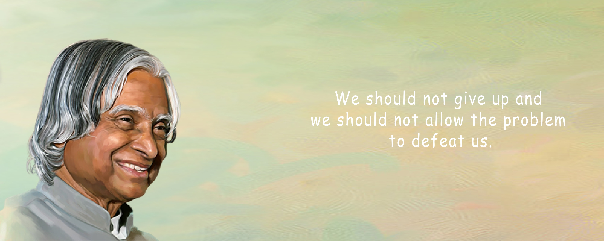
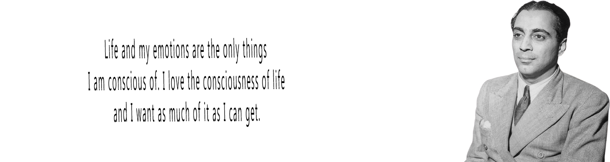
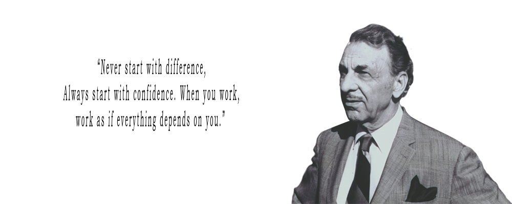

A. P. J. ABDUL KALAM
1931 – 2015

biography
Avul Pakir Jainulabdeen Abdul Kalam (15 October 1931 – 27 July 2015), also known as A. P. J. Abdul Kalam, was an Indian aerospace scientist and politician who served as the 11th president of India from 2002 to 2007. He was born and raised in Rameswaram, Tamil Nadu and studied physics and aerospace engineering. He spent the next four decades as a scientist and science administrator, mainly at the Defence Research and Development Organisation and Indian Space Research Organisation and was intimately involved in India's civilian space programme and military missile development efforts. Kalam is widely regarded as the father of India's missile program, and is popularly known as the "Missile Man of India" for his work on the development of ballistic missile and launch vehicle technology.
HOMI JEHANGIR BHABHA
1909 - 1966

biography
Homi Jehangir Bhabha (1909-1966) was a renowned Indian nuclear physicist and a visionary leader who played a pivotal role in the development of India's nuclear and space programmes. He is widely regarded as the "father of the Indian nuclear programme". Bhabha was born into a wealthy Parsi family in Bombay (now Mumbai) on October 30, 1909. He received his early education at the Cathedral and John Connon School and Elphinstone College in Bombay. In 1927, he went to England to study mechanical engineering at the University of Cambridge. However, he soon switched to physics and earned a doctorate in 1935.Bhabha's legacy is immense. He is credited with laying the foundation for India's nuclear and space programmes, which have played a major role in the country's development. He was also a brilliant scientist who made significant contributions to the field of physics. Bhabha is an inspiration to generations of Indian scientists and engineers.
Jehangir Ratanji Dadabhoy Tata
1904 - 1993
